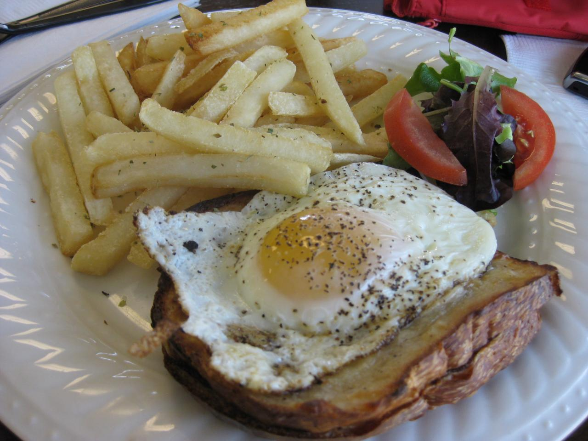
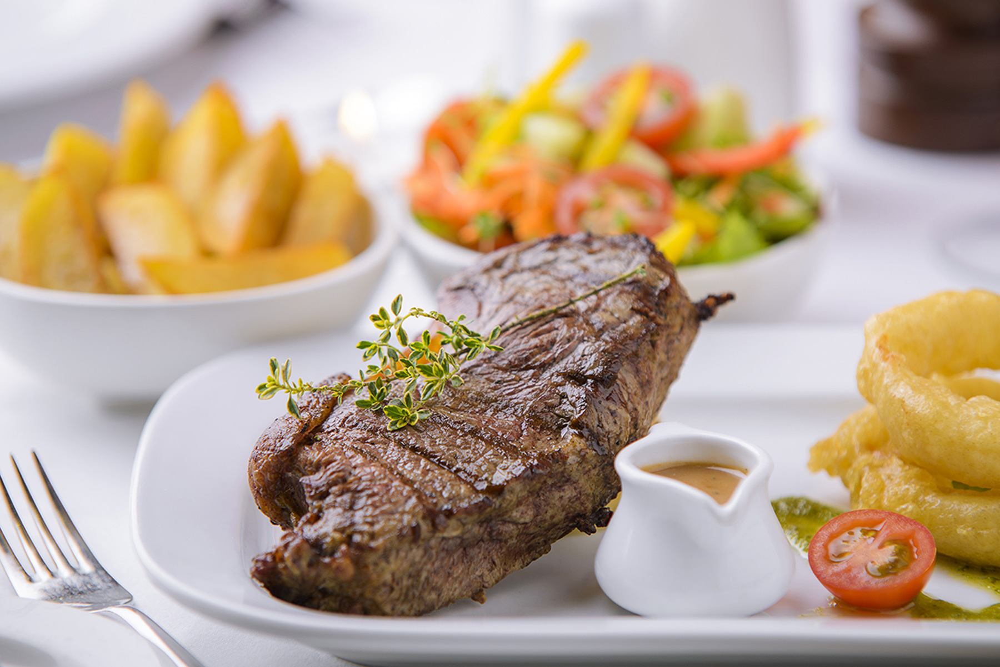

Favoritos






Historial
- Recetas en 5 minutos
- Tips de cocina
- Los mejores ingredientes
- Que utencilios usar
- Porque cocinar
Pizza

En su preparación básica, es un pan plano horneado, habitualmente de
forma redonda, elaborado con harina de trigo, sal, agua y levadura,
cubierto con salsa de tomate y queso. Existen gran cantidad de variedades,
principalmente debido al formato del pan, la forma de cocinarlo y el
agregado de diversos ingredientes (salami, tomate, champiñones, cebolla,
jamón, aceitunas, morrones, ananá, huevo, verduras, anchoas, palmitos,
etc.) y salsas. Su origen es dudoso, pero ha sido tradicionalmente
atribuido a la gastronomía de Italia y más puntualmente a la cocina
napolitana, razón por la cual la Unión Europea le reconoció en 2010 una
denominación de origen denominada Especialidad tradicional garantizada
(ETG). En 2017 la UNESCO declaró al "arte de los pizzaioli
(pizzeros) napolitanos" como Patrimonio Cultural Inmaterial de la Humanidad.

Que rica receta, ya me dio hambre.
Ojala pudiera cocinar asi.
:)
Helado

Es un alimento congelado que por lo general se hace de productos lácteos tales
como leche o crema, a menudo en combinación con frutas u otros ingredientes y sabores.
Generalmente se endulza con azúcar, saborizantes, edulcorantes o miel. Típicamente se le
añaden otros ingredientes tales como yemas de huevo, nueces, frutas, chocolate, galletas,
frutos secos, yogur y sustancias que lo estabilizaban.
Que rica receta, ya me dio hambre.

Ojala pudiera cocinar asi.